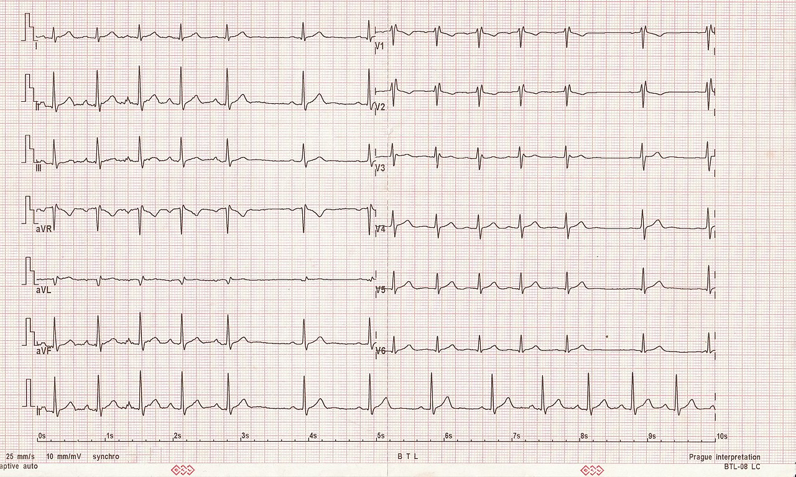

Hơi Thở Chính Là Chiếc Điều Khiển Từ Xa Của Nhịp Tim
Hầu hết các chức năng thuộc Hệ thần kinh Tự chủ (Autonomic Nervous System - ANS)—như tiêu hóa, co giãn đồng tử, bài tiết mồ hôi hay co thắt mạch máu—đều diễn ra hoàn toàn tự động bên ngoài ý thức của bạn. Tuy nhiên, tạo hóa đã ban tặng cho con người một "công tắc điều khiển thủ công" trực tiếp duy nhất: Hô hấp.
Mỗi khi bạn hít vào và thở ra, bạn kích hoạt một phản xạ cơ học và thần kinh tức thời bên trong lồng ngực gọi là Loạn nhịp xoang hô hấp (Respiratory Sinus Arrhythmia - RSA). Đừng để cái tên y khoa nghe có vẻ nghiêm trọng đánh lừa: RSA không phải là bệnh lý tim mạch—ngược lại, đó là dấu ấn sinh học đặc trưng của một hệ tim mạch khỏe mạnh, trẻ trung và có dây thần kinh phế vị nhạy bén!
- Khi Bạn Hít Vào (Tăng Tốc Giao Cảm): Cơ hoành co lại và hạ xuống dưới, làm giảm áp suất bên trong khoang ngực. Máu tĩnh mạch ùa vào tâm nhĩ phải của tim, đồng thời các thụ thể căng ở phổi tạm thời nhả chiếc phanh Dây thần kinh Phế vị. Kết quả là nhịp tim của bạn lập tức tăng nhanh (
khoảng cách R-R thu hẹp lại). - Khi Bạn Thở Ra (Hãm Phanh Phó Giao Cảm Phế Vị): Cơ hoành thư giãn và nâng vòm lên trên, làm tăng áp suất khoang ngực. Huyết áp động mạch tăng nhẹ, kích hoạt các thụ thể áp suất (baroreceptors) ở cung động mạch chủ và xoang cảnh truyền tín hiệu qua Dây thần kinh Phế vị (Vagus Nerve). Dây phế vị tiết ra chất dẫn truyền acetylcholine lên nút tạo nhịp của tim, lập tức làm nhịp tim chậm lại (
khoảng cách R-R giãn rộng ra).

Điều Kỳ Diệu Của Tần Số 0.1 Hz: Tại Sao 5.5 Nhịp Thở Mỗi Phút Là Tần Số Cộng Hưởng?
Trong một ngày làm việc bận rộn, hầu hết người trưởng thành thở từ 14 đến 18 nhịp mỗi phút (khoảng 3.5 đến 4 giây cho một chu kỳ thở), thường là thở nông bằng ngực trên. Ở tốc độ thở nhanh đó, sóng nhịp tim và sóng huyết áp bị lệch pha nhau, khiến biên độ HRV bị nén thấp.
Tuy nhiên, các nhà khoa học phản hồi sinh học tim mạch (Lehrer & Gevirtz, 2014; Steffen et al., 2017) đã khám phá ra rằng hệ thống tim mạch của con người có một tần số cộng hưởng điều hòa tự nhiên ở mức 0.1 Hertz (Hz)—tương đương với 1 chu kỳ thở mỗi 10 đến 11 giây, hay khoảng 5.5 đến 6 nhịp thở mỗi phút.
Khi bạn làm chậm nhịp thở về mức 5.5 giây hít vào + 5.5 giây thở ra:
1. Đồng Bộ Hóa Hô Hấp Và Phản Xạ Áp Thụ Quan (Baroreflex): Sóng hô hấp của bạn khớp pha hoàn hảo với chu kỳ dao động huyết áp tự nhiên dài 10 giây của cơ thể (sóng Mayer).
2. Biên Độ Dao Động HRV Đạt Cực Đại: Thay vì nhịp tim chỉ chênh lệch 3–4 bpm giữa lúc hít vào và thở ra, biên độ dao động nhịp tim của bạn mở rộng lên tới 15–25+ bpm giữa đỉnh pha hít vào và đáy pha thở ra!
3. Rèn Luyện Độ Nhạy Thụ Thể Áp Suất: Giống như nâng tạ giúp tăng sức mạnh cơ xương, việc tập thở cộng hưởng hàng ngày giúp rèn luyện các thụ thể áp suất động mạch và dây thần kinh phế vị, nâng cao trương lực phó giao cảm nền và hỗ trợ hạ huyết áp ổn định (Steffen et al., 2017).
So Sánh 3 Giao Thức Hơi Thở Lâm Sàng Trên Thiết Bị Đeo
Trong một thử nghiệm lâm sàng ngẫu nhiên có đối chứng nổi tiếng tại Trường Y Đại học Stanford đăng trên tạp chí Cell Reports Medicine (Balban et al., 2023), Tiến sĩ Andrew Huberman và Tiến sĩ David Spiegel đã trang bị vòng đeo WHOOP cho người tham gia để so sánh các bài tập thở 5 phút mỗi ngày với phương pháp thiền chánh niệm. Kết quả chứng minh rằng các bài tập thở chủ động—đặc biệt là thở kéo dài pha thở ra—vượt trội hơn hẳn thiền định trong việc hạ tần số hô hấp, cải thiện tâm trạng và cân bằng thần kinh tự chủ:
| Giao Thức Hơi Thở | Tỷ Lệ Hít Vào : Nín Thở : Thở Ra | Thời Điểm Áp Dụng Tốt Nhất | Tác Động Lên Hệ Thần Kinh Tự Chủ & Thiết Bị Đeo |
|---|---|---|---|
| 1. Thở Cộng Hưởng Điều Hòa (0.1 Hz) | 5.5s Hít : 0s Nín : 5.5s Thở (~5.5 nhịp/phút) | Sáng sớm sau khi dậy, trước khi ngủ hoặc tập luyện dây phế vị 10 phút/ngày | Tối đa hóa biên độ sóng RMSSD (HRV) theo thời gian thực và đồng bộ hóa phản xạ huyết áp. |
| 2. Tiếng Thở Dài Sinh Lý (Physiological Sigh) | Hít Kép Qua Mũi (4s + 1s nhấp thêm) : Thở Ra Chậm 7s | Khi căng thẳng cấp tính, hạ nhịp tim nhanh sau tập hoặc lo âu giữa ngày | Mở lại các phế nang bị xẹp (thải nhanh CO₂) và kích hoạt phanh phế vị làm giảm nhịp tim tức thì. |
| 3. Thở Hộp Chiến Thuật (Box Breathing) | 4s Hít : 4s Nín : 4s Thở : 4s Nín (3.75 nhịp/phút) | Trước buổi thuyết trình quan trọng, kỳ thi hoặc trước giờ thi đấu thể thao | Tăng khả năng dung nạp CO₂, kết hợp sự tập trung tỉnh táo với nhịp tim bình tĩnh. |
Hướng Dẫn Từng Bước: Giao Thức Thở Cộng Hưởng 5.5 Giây Trong 10 Phút
Bạn có thể kiểm chứng hiệu quả ngay hôm nay bằng cách mở màn hình Đo Căng Thẳng / Bài Tập Thở (Stress Monitor / Breathwork) trực tiếp trên đồng hồ Garmin, Oura, WHOOP, hoặc Apple Watch:
- Thiết Lập Tư Thế: Ngồi thẳng lưng thoải mái trên ghế hoặc nằm ngửa thư giãn trên giường trước khi ngủ. Thả lỏng cơ hàm và hạ nhẹ hai vai. Đặt một bàn tay lên vùng bụng dưới/khung sườn.
- Hít Vào Bằng Mũi Trong 5.5 Giây: Hít vào nhẹ nhàng, êm ái qua mũi trong 5.5 giây, cảm nhận khung sườn dưới và bụng phồng ra tự nhiên (
giãn nở cơ hoành 360 độ) mà không cần nhô cao ngực hay gồng cổ. Bạn sẽ thấy nhịp tim trên đồng hồ nhích nhẹ lên. - Chuyển Pha Mượt Mà (Không Nín Thở): Không gồng giữ hơi hay khóa cổ họng ở đỉnh pha hít vào. Hãy để hơi thở chuyển chiều mượt mà như một con sóng biển.
- Thở Ra Chậm Trong 5.5 Giây: Thở ra êm dịu qua mũi (hoặc mím nhẹ môi) trong 5.5 giây, để khung sườn và thành bụng xẹp xuống tự nhiên. Quan sát nhịp tim trên đồng hồ hạ xuống rõ rệt trong 3 giây cuối của nhịp thở ra.
- Hoàn Thành 50–55 Chu Kỳ (10 Phút Mỗi Ngày): Thực hành nhịp điệu này trong 10 phút trước khi đi ngủ giúp chuyển hệ thần kinh tự chủ ra khỏi trạng thái căng thẳng giao cảm ban ngày, tạo đà cho nhịp tim ban đêm hạ nhanh xuống "Đường cong hình chiếc võng" ngay từ chu kỳ ngủ đầu tiên.
Tài Liệu Tham Khảo & Nguồn Y Khoa
- Steffen, P. R., Austin, T., DeBarros, A., & Brown, T. (2017). The Impact of Resonance Frequency Breathing on Measures of Heart Rate Variability, Blood Pressure, and Mood. Frontiers in Public Health, 5, 222. Xem trên PubMed / NIH ↗
- Balban, M. Y., Neri, E., Kogon, M. M., Weed, L., Nouriani, B., Jo, B., ... & Huberman, A. D. (2023). Brief structured respiration practices enhance mood and reduce physiological arousal. Cell Reports Medicine, 4(1), 100895. Xem trên PubMed / NIH ↗
- Lehrer, P. M., & Gevirtz, R. (2014). Heart rate variability biofeedback: how and why does it work? Frontiers in Psychology, 5, 756. Xem trên PubMed / NIH ↗
- WHOOP The Locker. How to Increase HRV: Breathwork & Autonomic Nervous System Training. Xem trên WHOOP ↗